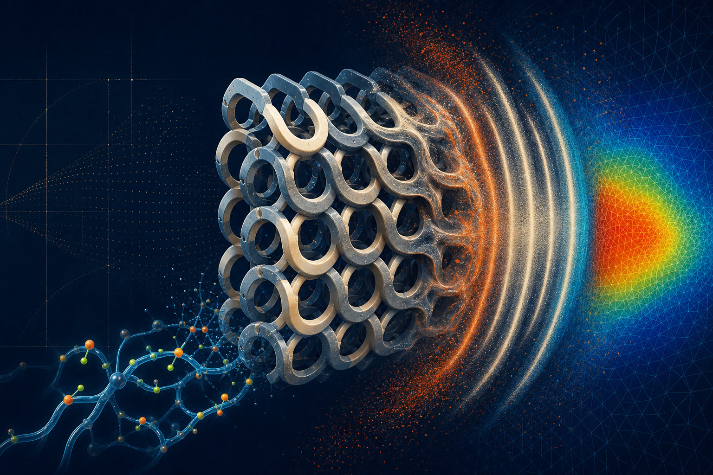

Impact & dynamic mechanics
High-rate deformation, material failure, ballistic response and energy absorption under short-duration loading.
Impact experiments · damage · protectionMechanical Engineering · Materials Science
Assistant Professor in Mechanical Engineering
I study how materials and structures deform, absorb energy and evolve—combining experiments and modelling to design lightweight, resilient engineering systems.

My work sits at the intersection of experimental mechanics, advanced materials and structural design. I investigate rate-sensitive polymers, composites, biodegradable materials and architected lattices across different loading rates, temperatures and environments.
I combine mechanical testing, digital image correlation, thermo-mechanical characterisation, constitutive modelling and finite-element simulation to connect observed behaviour with practical design decisions.
Research interests

High-rate deformation, material failure, ballistic response and energy absorption under short-duration loading.
Impact experiments · damage · protectionLightweight, bio-inspired and horseshoe-microstructure lattices with programmable nonlinear behaviour.
Lattice design · optimisation · additive manufacturingThermo-mechanical, rate-dependent and environmental behaviour of TPU, epoxy, PLA, PCL and fibre composites.
Functional polymers · degradation · chemo-mechanicsFull-field measurement and physics-based modelling used together to explain and predict material response.
DIC · constitutive models · finite elementsInternational Journal of Solids and Structures
Composites Part A: Applied Science and Manufacturing
International Journal of Plasticity
International Journal of Impact Engineering
International Journal of Mechanical Sciences
Polymer
A practice-based academic pathway spanning solid mechanics, materials engineering and inclusive engineering education.
New Model Institute for Technology and Engineering
Queen Mary University of London
University of Oxford
University of Oxford
Queen Mary University of London
University of Oxford
University of Nottingham
For research collaboration, industry projects, invited talks and engineering education.